S5 Testbed
Eric A. Meyer
Complex Spiral Consulting
What Is S5?
- It's a Simple Standards-based Slide Show System
- One XHTML document provides all of the slide show's content
- CSS handles the layout and look of the slides
- JavaScript handles the dynamic aspects of the show
- That's all there is to it! (skip to summary; demonstrates links internal to the slide show)
- I have notes here!
- Keen.
- Remember to tell people that notes are a new feature in 1.2
Operatic Origins
- Opera 4 introduced Opera Show, a projection-mode style sheet technology (link demonstrates external link styling and window spawning)
- Allows a single XHTML document to be turned into a PowerPoint-like slide show
- Adding screen and print style sheets allows for multi-medium views of a single document
- Highly efficient, but highly browser centric...
- S5 and OperaShow diverged greatly in S5 1.1
- S5 1.2 should (we hope) bring them into harmony once more
Incremental Display
- Keep hitting/clicking "next" as long as it isn't the control link (»)
- Bullet points are revealed one by one
- All based on class name of
inc - Lists can be classed to make items appear individually
- Individual items can be classed as well to create "animations"; see Derek Featherstone's example
- All based on class name of
- Let's try it again, but without the first bullet point being pre-highlighted...
Incremental Display II
- Keep hitting/clicking "next" as long as it isn't the control link (»)
- Bullet points are revealed one by one
- All based on class name of
incremental - Lists can be classed to make items appear individually
- Individual items can be classed as well to create "animations"; see Derek Featherstone's example
- All based on class name of
- Notice how the sub-list was part of the parent bullet point; that was done on purpose
- Now to move on to other test slides!
PNG Alpha Tests
DIV with PNG background followed by foreground PNG
DIV with PNG background followed by foreground PNG
S5 Default File Structure
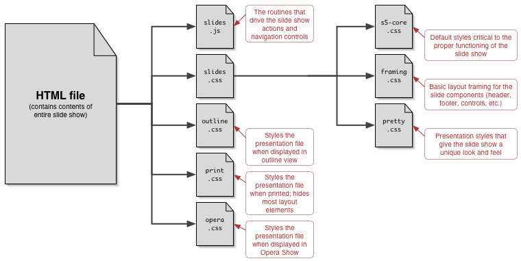
S5 Themes
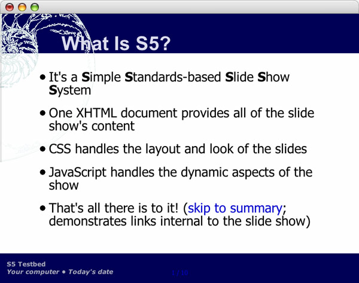 
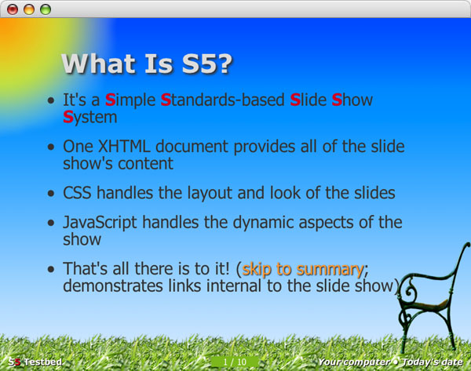 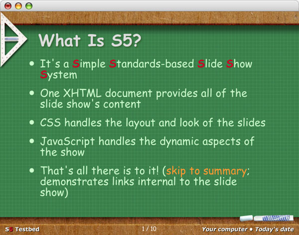
(one way of presenting multiple graphics)
Incremental S5 Themes
(one by one!)
Incremental Animation
- A demonstration of just one of the many ways to accomplish simple animation-like effects (using a diagram from "XFN and...")
 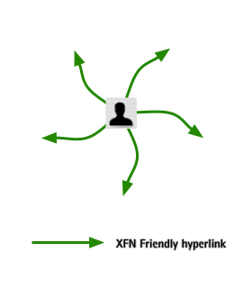
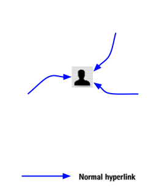
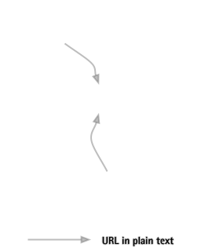
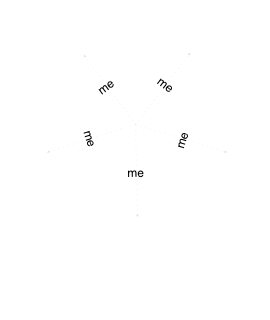
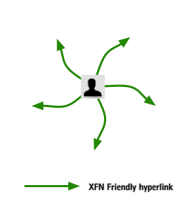
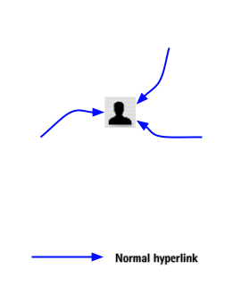
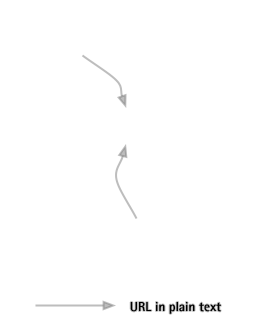
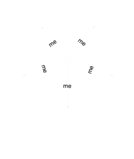
In Summary
- With minimal scripting, we have recreated and improved upon a (currently) browser-specific technology, making it cross-browser in the process
- The S5 format is OSF 1.0 compatible
- S5 is a very flexible and lightweight slide show system available for anyone to use